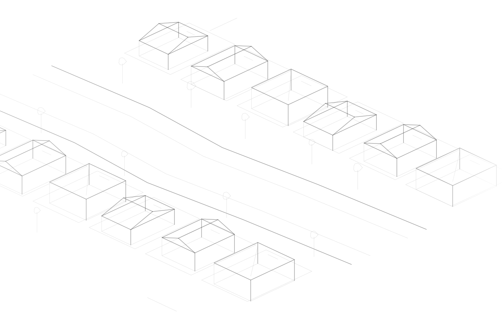

SHAPING
WHAT COMES
NEXT.
Auckland planning advice for site feasibility, resource consent and building consent coordination. Know what your site can support and what to check before you commit.
Discuss a project
GOOD PLANNING
IS MORE THAN
PERMISSION.
The decisions that shape a place begin long before construction.
We check the planning rules, site constraints and approvals that can change your project before you commit to a design.
How we thinkFROM FIRST IDEA
TO INFORMED ACTION.
Checking an address or ready to move a proposal forward? Start with the decision in front of you.
Resource consents
Identify which rules trigger consent, prepare the planning assessment and coordinate lodgement where agreed.
Building consent coordination
Coordinate the drawings, technical reports and planning conditions needed for the building consent process.
Environmental assessments
Prepare an Assessment of Environmental Effects (AEE) that explains the proposal, its effects and how they are addressed.
Site feasibility
Get a desktop assessment of zoning, site risks, consent pathways and what to check next.